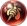
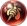

Garra de Lâmina
Garra de Lâmina
 Granito
Granito
 Eco
Eco
 Ferroada de Vespa
 Correntezas
Correntezas
 Bênção
Bênção
Este é um site feito por fã em homenagem ao Champions Legion!


Garra de Lâmina
Granito
Eco
 Ferroada de Vespa
Correntezas
Bênção
Na lane phase joy deve ficar nas gramas esperando o atirador inimigo avançar para colocá-lo na maleta e conseguir uma kill para o seu adc. Além disso, é importante ficar de olho na mid lane para dar um bom teleporte, coordene com seu adc!
DICA: Use os teleportes em gramas para diminuir a chance do inimigo o ver.
Nas teamfights, capture o adversário que estiver causando mais problemas para seu time e o leve para longe com sua ultimate(cuidado para não o salvar com essa jogada). Você pode, ainda, usar seu teleporte para levar todo o seu time para a backline inimiga e eliminar o mago e atirador inimigos.
Use a segunda habilidade para avançar no inimigo, dê hits básicos para stackar a marca(você pode ativar sua ult nesse meio termo), capture o inimigo na mala e o leve para o tp, ou use a corneta de lobo para correr com ele para o mais longe que puder.
Lembre-se de que levar seu inimigo para debaixo de torres aliadas é uma boa jogada pois fará ele tomar dano delas.
Em suma, jogar de joy se resume a: dar bons teleportes, fazer boas capturas e, não menos importante, colocar muitas marcas para reduzir o dano dos inimigos.
Ordem de compra dos itens: Comece com a gema da sabedoria( ), compre as botas de hermes, feche o item de suporte e pode comprar o resto dos itens na ordem exibida acima. Vale ressaltar que itens de defesa devem ser comprados mediante a necessidade. Compre itens que sirvam para tankar o dano mais forte do time inimigo.
), compre as botas de hermes, feche o item de suporte e pode comprar o resto dos itens na ordem exibida acima. Vale ressaltar que itens de defesa devem ser comprados mediante a necessidade. Compre itens que sirvam para tankar o dano mais forte do time inimigo.
Ordem de upgrade das habilidades: 3ª → 2ª → 1ª.